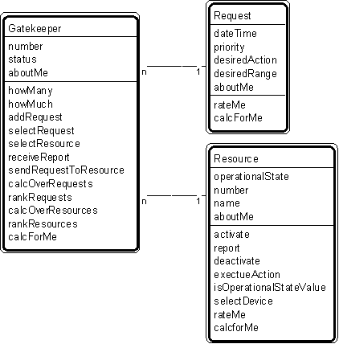

Patt#31. "Gatekeeper-Request-Resource" Pattern // interaction patterns

Typical object interactions
- for gatekeeper and request
- - addRequest --> create
- - selectRequest --> rateMe
- - rankRequests --> rateMe
- for gatekeeper and resource
- - sendRequestToResource --> executeRequest
- - selectResource --> rateMe
Examples
- comm line gatekeeper - comm line request - comm line.
Combinations
Patt#2. "Actor-Participant" (participant = gatekeeper)
Patt#3. "Participant-Transaction" (participant = gatekeeper)
Patt#5. "Specific Item - Transaction" (specific item = resource).